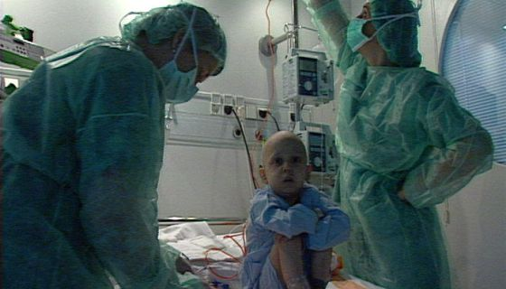
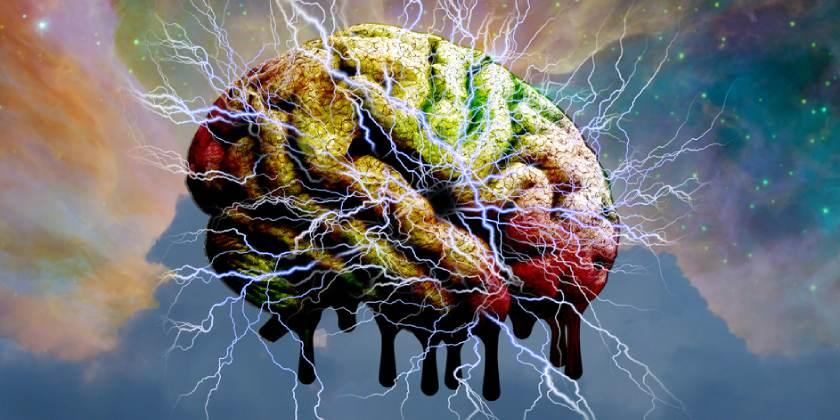
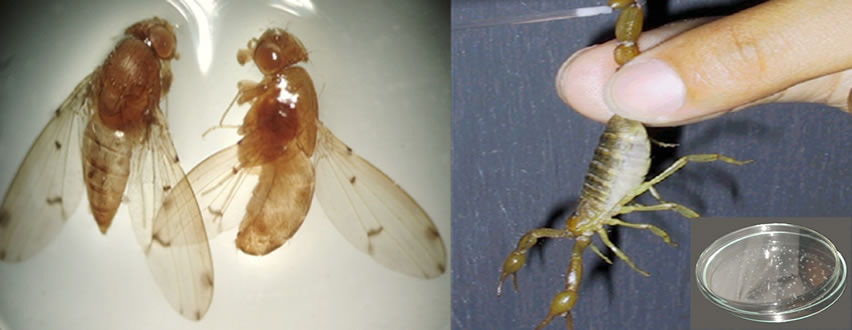
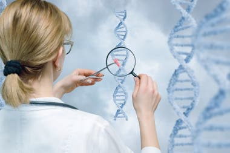

En 1989 se crea el Centro Nacional de los Estados Unidos para la Investigación del Genoma Humano (National Center for Human Genome Research), dirigido por James Watson para supervisar el proyecto elaborar el mapa y la secuencia del ADN humano para 2005. Al año siguiente se inauguró de manera formal el Proyecto Internacional del Genoma Humano (International Human Genome Project). La meta de este proyecto era identificar y secuenciar todos los genes del genoma humano.
En 1990 se lleva a cabo la primera terapia génica en una niña de cuatro años con una enfermedad del sistema inmune llamada “deficiencia ADA”; aparentemente la terapia funcionó, pero desató una serie de debates sobre los aspectos éticos de la misma.
En 1998, dos grupos de investigación tuvieron éxito en el cultivo de células troncales embrionarias, lo que abriría nuevas perspectivas para el tratamiento de enfermedades.
Como resultado del proyecto del Genoma Humano, se publica en 2001 la secuencia de dicho genoma en las revistas Science y Nature, haciendo posible el que investigadores de todo el mundo comiencen a desarrollar tratamientos genéticos a enfermedades. La secuencia se completó para el 2003, dos años antes de lo planeado y con un gasto menor al estimado.
Un grupo de investigadores anuncia en 2002 sus resultados exitosos en la obtención de una vacuna contra el cáncer cérvico, la primera vacuna preventiva para algún tipo de cáncer.
En 2003, se encuentra un gen relacionado con la depresión y se avanza en la detección de lazos genéticos con esquizofrenia y desorden bipolar. Ese mismo año, el gobierno de China aprueba el uso del primer producto de terapia génica (Gendicine), desarrollado por la compañía Shenzhen SiBiono GenTech para el tratamiento de cáncer de cabeza y cuello.
Para 1996, un grupo de científicos reportó la primera secuencia completa de un organismo complejo: la levadura de pan Saccharomyces cerevisiae. El año siguiente pasaría a la historia por el anuncio de investigadores del Instituto Rosalin de Escocia sobre la clonación de una oveja, a la que llamaron Dolly, a partir de una célula adulta.
A partir de la secuenciación del primer organismo complejo, comienza la carrera por obtener el genoma de más organismos, así en 1998 se obtuvo la secuencia del gusano Caenorhabditis elegans, el primer genoma completo de un animal; en 2000 la primera planta, Arabidopsis thaliana; en 2002 la primera planta usada como alimento, el arroz, así como el parásito que causa la malaria y la especie de mosquito que lo transmite; en 2004 el pollo, la rata de laboratorio y el chimpancé, el primate más cercano al hombre; en 2005 el perro; en 2006 la abeja y de manera parcial el Neandertal; y en 2007 el caballo.
En el año 2002, un grupo de investigadores logra obtener un virus sintético (de poliomielitis) partiendo únicamente de su genoma; este logro despierta muchas preguntas éticas y de seguridad. Ya en 2005, se logra sintetizar parcialmente al virus de la influenza causante de la muerte de al menos 20 millones de personas en todo el mundo de 1918 a 1919.
En 2003 se logra clonar por primera vez una especie en peligro de extinción (el banteng) y otras especies como el caballo, venados y mulas; al año siguiente se lleva a cabo la clonación de la primera mascota: un gato; un año más tarde, en 2005, se logra la clonación de una vaca a partir de células de un animal muerto.
En el año 2005, científicos de la Universidad de Harvard reportan haber tenido éxito en convertir células de piel en células troncales embrionarias al fusionarlas con células troncales embrionarias existentes.
 